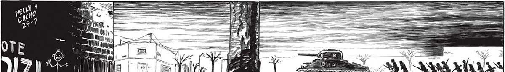
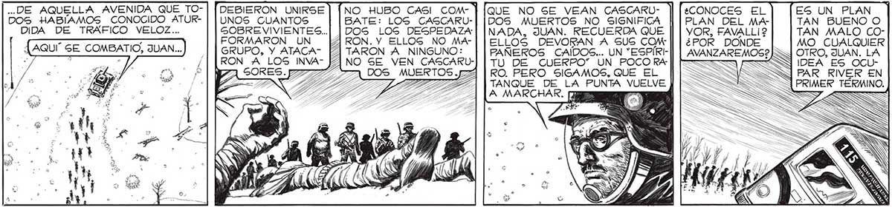

100 A AA | ñ A LA No == Me | Es SEGUIMOS AVANZANDO POR LA AVENIDA. ATRAS QUEDO LA ROTONDA DE LA GENERAL PAZ, CON LAS SEÑALES DEL RECIENTE COMBATE. ¡ATRAS QUEDARON LAS ESCUELAS RAGGIO, LA ESCUELA DE MECANICA DE LA ARMADA. EGUIMOS AVANZANDO, LENTAMENTE. PORQUE EN CADA BOCACALLE ... NO LOS ENVIDIO A LOG QUE VAN | EN ESE TANQUE. ASOMARSE A CADA BOCACALLE HA DE RESULTARLES UNA AGONIA..G] LOS CASCARUDOS LO ATACAN CON EL_RAYO MORIRAN EN CUEGTION DE SEGUNDOS. ¿NO DEBIE: RA IR ADELANTE NUESTRO LANZARRAYOS ej NO, JUAN... RECUERDA QUE EL LANZARRA] SU LOGICA DE YOS ES NUESTRA ÚNICA ESPERANZA... | HIERRO, FRÍA. NO PODEMOS ARRIESGARLO. UN TANQUE | TAN HÉLADA CON GU TRIPULACION COMPLETA VALE COMO AQUELLA MUCHO, PERO MUCHO MENOS QUE EL GRIS MAÑANA > == LANZARRAYOS. DE INVIERNO . A EN LA QUE EL A SOL HABÍA BRILLADO DURANTE UN_ RATO A TRA: VES DE LA NEVADA QUE SEGUÍA CAYENDO, 2| CAYENDO. PERO | QUE AHORA SE '... | HABÍA NUBLADO, “¿4 HACIENDO AÚN ""| MAS DESOLADO EL PAISAJE ... .. UN TANQUE SE ADELANTABA. PARA AVERIGUAR Sl NO HABÍA INDICIOS DE LOS CASCARUDOS Y S5U TERRIBLE RAYO. EN UNA DE AQUELLAS PAUSAS DEL AVANCE SE ME UNIO FAVALLI!.. ..DE AQUELLA AVENIDA QUE TO-| [DEBIERON UNIRSE] ÍNO HUBO CASI COM- ] DOGS HABIAMOS CONOCIDO ATUR- | [UNOS CUANTOS BATE: LOS CASCARUDIDA DE TRAFICO VELOZ... E S. DOS LOS DESPEDAZA: - . i RON UN RON. Y ELLOG NO MAA¡AQUI SE COMBATIO, JUAN... GRUPO, Y ATACA- PP] TARON A NINGUNO : * 0 Ez /(|RON A LOS INVA- PINO SE VEN CASCARUPF FA QIOS MUERTOS 2 QUE NO SE VEAN CASCAKUDOS MUERTOS NO SIGNIFICA NADA, JUAN. RECUERDA QUE ELLOS DEVORAN A SUS COM PAÑEROS CAIDOS... UN “ESPÍRITU DE CUERPO” UN POCO RARO. PERO SIGAMOS, QUE EL TANQUE E LA PUNTA PELAS ¿CONOCES EL EG UN PLAN PLAN DEL MA-| | TAN BUENO O VOR, FAVALLI? TAN MALO CO¿POR DONDE MO CUALQUIER OTRO, JUAN. LA IDEA ES OCUPAR RIVER EN PRIMER TÉRMINO.

